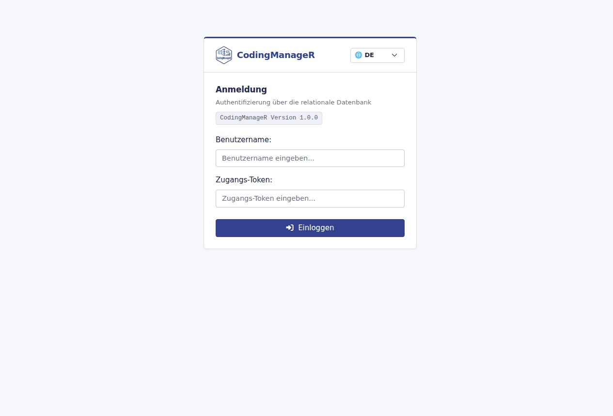

Installation und Start von CodingManageR (Deutsch)
Source:vignettes/CodingManageR-de.Rmd
CodingManageR-de.Rmd1 Willkommen
CodingManageR ist eine Webanwendung für qualitative Textkodierung und Kodiererschulung. Für die tägliche Nutzung müssen Sie keinen Programmiercode schreiben. Nach dem Start arbeiten Sie über übersichtliche Menüs und Schaltflächen direkt im Webbrowser.
Diese Anleitung zeigt Ihnen drei Dinge:
- Wie Sie CodingManageR über CRAN oder GitHub installieren.
- Wie Sie die Anwendung in weniger als einer Minute auf Ihrem eigenen Computer starten.
- (Optional, für IT-Administratorinnen und IT-Administratoren) Wie Sie die Anwendung auf einem Linux-Server für ein ganzes Team betreiben.
Englische Version verfügbar: Eine englischsprachige Fassung dieser Installationsanleitung steht über
vignette("CodingManageR", package = "CodingManageR")bereit.
1.1 Welche Einrichtung benötigen Sie?
| Ihre Situation | Empfohlene Einrichtung | Relevanter Abschnitt |
|---|---|---|
| Sie arbeiten allein oder testen die App auf Ihrem Laptop bzw. PC | Lokaler Modus (SQLite) — kein Datenbankserver erforderlich | Abschnitte 2 und 3 |
| Mehrere Kodierer melden sich gleichzeitig über einen Weblink an | Mehrbenutzer-Servermodus (Shiny Server + MariaDB) | Abschnitte 2 und 4 |
1.2 Voraussetzungen
Installieren Sie zuerst R (Version 4.1.0 oder neuer) auf Ihrem Computer. Wenn Sie neu mit R arbeiten, empfiehlt sich zusätzlich das kostenlose RStudio Desktop. Dort steht ein einfaches Konsolenfenster zur Verfügung, in das Sie die folgenden Befehle kopieren und mit Enter ausführen können.
Hinweis zur KI-gestützten Erstellung: Diese Vignette, der Quellcode des Pakets CodingManageR sowie alle integrierten Beispieldaten (Kodierskalen, Quellen und Falltexte) wurden mit Hilfe von KI erstellt.
2 Installation von CodingManageR
Öffnen Sie R oder RStudio und wählen Sie eine der beiden folgenden Methoden. Die Installation ist pro Computer nur einmal erforderlich.
2.1 Option 1: Installation über CRAN (empfohlen)
CRAN stellt die offizielle stabile Version bereit. Für die meisten Nutzerinnen und Nutzer ist dies der einfachste und zuverlässigste Weg:
install.packages("CodingManageR")R lädt automatisch alle benötigten Hilfspakete herunter und installiert sie. Die erste Installation kann einige Minuten dauern.
2.2 Option 2: Entwicklungsversion über GitHub installieren
Möchten Sie die neuesten Funktionen bereits vor der nächsten
CRAN-Veröffentlichung nutzen, installieren Sie das Paket direkt von
GitHub über pak (empfohlen) oder remotes:
# Methode A: mit pak (empfohlen)
install.packages("pak")
pak::pak("FBerding/CodingManageR")
# Methode B: mit remotes
install.packages("remotes")
remotes::install_github("FBerding/CodingManageR")Tipp für R-Einsteiger: Falls R während der Installation fragt, ob ältere Pakete aktualisiert werden sollen, ist Bestätigen mit Enter oder die Auswahl
"All"in der Regel sicher.
3 Start auf dem eigenen Computer (Lokaler Modus)
Im lokalen Modus verwendet die Anwendung SQLite. SQLite ist eine schlanke Datenbank, die als einzelne Datei auf Ihrem Computer gespeichert wird. Darin liegen alle Skalen, Falltexte, Quellen, Benutzerkonten und Kodierungen. Ein separater Datenbankserver wird nicht benötigt.
3.1 Schritt 1: Neues, leeres Projekt starten
Fügen Sie diesen Befehl in die R-Konsole ein und drücken Sie Enter:
CodingManageR::run_app_local()Ihr Webbrowser oder der RStudio-Viewer öffnet sich automatisch und zeigt die Anmeldeansicht von CodingManageR (siehe Abbildung 1).

Abbildung 1: Anmeldeansicht von CodingManageR mit Eingabefeldern für Benutzername und Zugangs-Token sowie der Sprachauswahl (Deutsch/Englisch).
Sie können für Ihr Projekt gezielt einen eigenen Dateinamen oder
Ordner festlegen. Übergeben Sie dazu den Pfad mit
sqlite_path oder setzen Sie die Umgebungsvariable
SQLITE_PATH:
CodingManageR::run_app_local(sqlite_path = "mein_kodierprojekt.sqlite")run_app_local() benötigt lediglich zwei Parameter
(sqlite_path und empty) und bleibt stets
streng im lokalen SQLite-Modus — selbst dann, wenn auf Ihrem Rechner für
andere Projekte Umgebungsvariablen wie MYSQL_HOST oder
MYSQL_USER gesetzt sind.
3.2 Schritt 2: Optional — App mit integrierten Beispieldaten testen
Nutzen Sie CodingManageR zum ersten Mal? Sie können die Anwendung zunächst mit einer Demo-Datenbank ausprobieren, bevor Sie ein eigenes Projekt anlegen. Der Demo-Modus ergänzt Beispielskalen, Beispielfalltexte und Testkonten:
CodingManageR::run_app_local(sqlite_path = "coding_demo.sqlite", empty = FALSE)- Leerer Projektstart (
empty = TRUE, Standard): erzeugt leere Tabellen und ausschließlich das erste Administratorkonto. - Demo-Start mit Beispieldaten (
empty = FALSE): ergänzt zusätzlich Beispielskalen, Falltexte, Quellen, Referenzbewertungen sowie ein Test-Kodiererkonto (user1/token2026).
3.3 Schritt 3: Anmelden und Standardpasswort ändern
Beim ersten Start einer neuen Datenbank legt die Anwendung automatisch ein Administratorkonto an:
-
Benutzername:
admin -
Zugangs-Token:
geheim123
Melden Sie sich mit diesen Zugangsdaten über
Einloggen an. Öffnen Sie anschließend
Admin-Bereich -> Benutzerverwaltung und ersetzen Sie
das Zugangs-Token von admin umgehend durch ein sicheres
eigenes Passwort.
Neu bei CodingManageR? Klicken Sie nach der Anmeldung oben rechts in der Kopfleiste auf Erste Schritte (siehe Abbildung 2). Dadurch startet eine interaktive Schritt-für-Schritt-Tour direkt innerhalb der Anwendung.

Abbildung 2: Angemeldeter Arbeitsbereich von CodingManageR mit Navigationsreitern, Schaltfläche „Erste Schritte“, persönlichen Kennzahlen und dem Reliabilitätsverlauf.
3.4 Schritt 4: Mehrere lokale Projekte verwalten
Im lokalen Modus entspricht eine .sqlite-Datei
genau einem eigenständigen Projekt. Jede Datei verwaltet ihre
eigenen Skalen, Quellen, Falltexte, Benutzerkonten, Kodierungen und
Schulungsverläufe vollständig getrennt.
Wenn Sie CodingManageR::run_app_local() ohne
sqlite_path aufrufen, öffnet die App immer dieselbe
Standarddatei in Ihrem R-Benutzerordner. Um verschiedene Studien oder
Lehrveranstaltungen sauber zu trennen, vergeben Sie pro Projekt einen
eigenen sqlite_path:
# Projekt A: erstellt (oder oeffnet) "studie_a.sqlite" im Arbeitsverzeichnis
CodingManageR::run_app_local(sqlite_path = "studie_a.sqlite")
# Projekt B: erstellt (oder oeffnet) eine zweite, getrennte Datenbank
CodingManageR::run_app_local(sqlite_path = "studie_b.sqlite")Möchten Sie ein Projekt in einem eigenen Unterordner ablegen, erstellen Sie den Ordner zuerst. SQLite legt neue Datenbankdateien nur in bereits vorhandenen Verzeichnissen an:
dir.create("projekte/studie_2026", recursive = TRUE, showWarnings = FALSE)
CodingManageR::run_app_local(sqlite_path = "projekte/studie_2026/studie_2026.sqlite")Um später am selben Projekt weiterzuarbeiten, starten Sie die
Anwendung einfach erneut mit demselben sqlite_path. Alle
gespeicherten Skalen, Falltexte und Kodierungen stehen unmittelbar
wieder bereit.
3.4.1 Projekte sichern, umbenennen, verschieben und archivieren
Da jedes Projekt in einer einzigen .sqlite-Datei liegt,
lassen sich Sicherungskopien sehr einfach anlegen. Beachten Sie dabei
unbedingt eine wichtige Regel:
-
Beenden Sie die Anwendung immer zuerst. Klicken Sie
in RStudio auf die rote Stopp-Schaltfläche oder drücken Sie
Escbzw.Strg+Cin der R-Konsole. Während des Betriebs nutzt SQLite Write-Ahead Logging (WAL) und hält aktuelle Änderungen kurzzeitig in Hilfsdateien (-walund-shm). Beim sauberen Beenden werden diese Änderungen vollständig in die Hauptdatei.sqlitezurückgeschrieben. -
Sicherungskopie oder Archiv anlegen: Kopieren Sie
die
.sqlite-Datei auf ein Sicherungslaufwerk oder speichern Sie eine datierte Kopie (z. B.studie_a_backup_2026-11-22.sqlite). -
Projekt umbenennen oder verschieben: Benennen Sie
die
.sqlite-Datei im Dateimanager um oder verschieben Sie sie in einen anderen Ordner. Öffnen Sie das Projekt danach mit dem neuen Pfad:CodingManageR::run_app_local(sqlite_path = "neuer_ordner/umbenanntes_projekt.sqlite"). - Langfristige Forschungsarchivierung: Exportieren Sie Ihre Daten zusätzlich als CSV-Dateien (offene Tabellenformate für Excel, R oder SPSS). Diese Exporte finden Sie unter Admin-Bereich -> Daten & Import/Export.
Wichtig: Lokale SQLite-Dateien sind für die Nutzung durch eine einzelne Person auf einem Computer gedacht. Teilen Sie eine
.sqlite-Datei nicht gleichzeitig mit mehreren Nutzerinnen und Nutzern über ein Netzlaufwerk. Verwenden Sie für Teams die folgende Server-Einrichtung.
4 Optional: Mehrbenutzer-Serverbetrieb (für IT-Administration)
Hinweis: Überspringen Sie diesen Abschnitt, wenn Sie CodingManageR ausschließlich lokal auf Ihrem eigenen Computer verwenden. Dieser Abschnitt richtet sich an IT-Verantwortliche oder Projektadministratorinnen und -administratoren, die die App auf einem Ubuntu- oder Debian-Linux-Server mit Shiny Server Open Source und MariaDB/MySQL bereitstellen möchten.
4.1 Schritt 1: Systempakete und MariaDB installieren
Führen Sie folgende Befehle mit sudo-Rechten auf dem
Server aus:
sudo apt update
sudo apt install -y r-base r-base-dev libmariadb-dev libcurl4-openssl-dev libssl-dev libxml2-dev mariadb-server gdebi-core wgetStarten Sie MariaDB, aktivieren Sie den Autostart und führen Sie die Sicherheitskonfiguration aus:
4.2 Schritt 2: CodingManageR und RMariaDB systemweit installieren
Installieren Sie beide Pakete in der systemweiten R-Bibliothek, damit
der Systembenutzer shiny darauf zugreifen kann.
Installation der stabilen Version über CRAN:
Oder Installation der Entwicklungsversion über GitHub:
4.3 Schritt 3: Datenbank und Datenbankbenutzer anlegen
Öffnen Sie die MariaDB-Kommandozeile:
Legen Sie die Datenbank sowie einen eigenen Datenbankbenutzer an.
Ersetzen Sie StarkesPasswortWaehlen durch ein eigenes
sicheres Passwort:
4.4 Schritt 4: Shiny Server Open Source installieren
Laden Sie Shiny Server herunter und installieren Sie das Paket (prüfen Sie bei Bedarf die aktuelle Versionsnummer auf der Posit-Website):
4.5 Schritt 5: Einmaligen Einstiegspunkt (app.R)
anlegen
Erstellen Sie einen Ordner unter /srv/shiny-server/ und
kopieren Sie das minimale Startskript app.R einmalig aus
CodingManageR hinein:
sudo mkdir -p /srv/shiny-server/codingmanager
sudo R -e 'file.copy(system.file("shiny", "app.R", package = "CodingManageR"), "/srv/shiny-server/codingmanager/app.R", overwrite = TRUE)'
sudo chown -R shiny:shiny /srv/shiny-server/codingmanagerIntern enthält diese app.R lediglich eine Paketprüfung
sowie einen parameterlosen Aufruf von
CodingManageR::run_app_server(). Sie müssen diese Datei nur
ein einziges Mal anlegen — sie bleibt auch bei
künftigen Paket-Updates von CodingManageR ohne manuelle
Anpassungen funktionsfähig.
Sicheres Mehrbenutzer-Verhalten:
CodingManageR::run_app_server()erzwingt zwingend MySQL/MariaDB und deaktiviert den SQLite-Fallback vollständig. Fehlen Zugangsdaten oder ist MariaDB nicht erreichbar, bricht der Start mit einer klaren Fehlermeldung in den Shiny-Server-Logs ab, statt still eine lokale SQLite-Datei anzulegen.
4.6 Schritt 6: .Renviron konfigurieren und Server neu
starten
Erstellen Sie eine .Renviron-Datei im Ordner
/srv/shiny-server/codingmanager/, in der Ihre
Datenbank-Zugangsdaten sowie optionale Laufzeitparameter gespeichert
werden:
Fügen Sie diese Zeilen ein und tragen Sie das Passwort aus Abschnitt 4.3 ein:
MYSQL_HOST=127.0.0.1
MYSQL_PORT=3306
MYSQL_USER=shiny_user
MYSQL_PASSWORD=StarkesPasswortWaehlen
MYSQL_DBNAME=kodierer_portal
# Optionale Laufzeit-Einstellungen (Standardwerte; bei Bedarf auskommentieren):
# CODINGMANAGER_MAX_UPLOAD_GB=3
# CODINGMANAGER_EMPTY=TRUEBeschränken Sie die Dateirechte so, dass ausschließlich der Benutzer
shiny das Passwort lesen kann, und starten Sie Shiny Server
neu:
sudo chown shiny:shiny /srv/shiny-server/codingmanager/.Renviron
sudo chmod 600 /srv/shiny-server/codingmanager/.Renviron
sudo systemctl restart shiny-serverÖffnen Sie anschließend
http://<server-ip>:3838/codingmanager/ im Webbrowser.
Beim ersten Aufruf erstellt CodingManageR automatisch alle 9 Tabellen in
MariaDB sowie das Administratorkonto admin mit dem Token
geheim123. Melden Sie sich an und ändern Sie dieses
Passwort sofort.
4.7 CodingManageR auf dem Server aktualisieren (ohne Anpassung von
app.R)
Da /srv/shiny-server/codingmanager/app.R ausschließlich
CodingManageR::run_app_server() aufruft und alle
Einstellungen in .Renviron liegen, muss app.R
bei künftigen Paket-Updates weder bearbeitet noch neu kopiert werden. Es
genügt, das R-Paket zu aktualisieren und Shiny Server neu zu
starten:
# Update ueber CRAN:
sudo R -e 'install.packages("CodingManageR", repos = "https://cloud.r-project.org")'
sudo systemctl restart shiny-server
# Oder Update ueber GitHub:
# sudo R -e 'remotes::install_github("FBerding/CodingManageR")'
# sudo systemctl restart shiny-server5 Nächste Schritte
Sobald CodingManageR läuft, öffnen Sie die ausführliche Schritt-für-Schritt-Einführung. Dort erfahren Sie, wie Sie Quellen, Skalen, Falltexte, Benutzerkonten, Kodierschulungen, Feldkodierungen und Datenexporte Schritt für Schritt einrichten:
vignette("introduction-de", package = "CodingManageR")